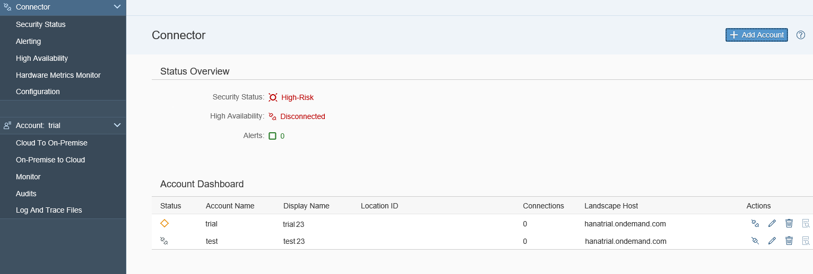
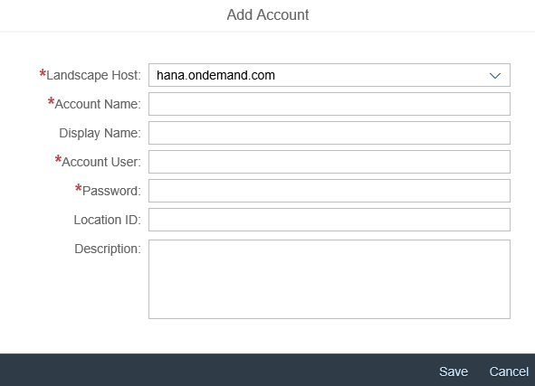
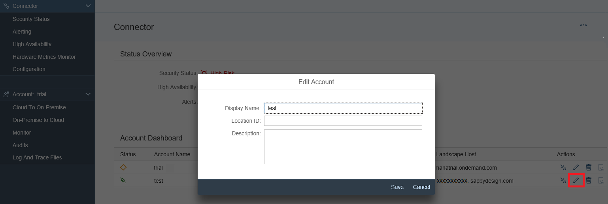

Effective version 2.2, it is possible to connect to several accounts within a single Cloud connector installation. Those accounts can use the Cloud connector concurrently with different configurations. By selecting an account from the drop-down box, all tab entries will show the configuration, audit and state specific to this account. In case of audit and traces, cross account info is merged with the account specific parts in the UI.
In the account dashboard (choose your Account from the main menu), you can check the state of all account connections managed by this Cloud connector at a glance.

In the screenshot above, the trial account (display name trial23) is already connected, but has no active resources exposed. The test account (display name test23) is currently disconnected.
In addition, depending on the connection state the dashboard allows you to do disconnect and connect operations for the accounts by pressing the respective button in the Actions column.
In case you want to have an additional account to be connected with your on-premise landscape, just press the Add Account button and a dialog appears, which is similar to the Initial Configuration operation when establishing the first connection.

